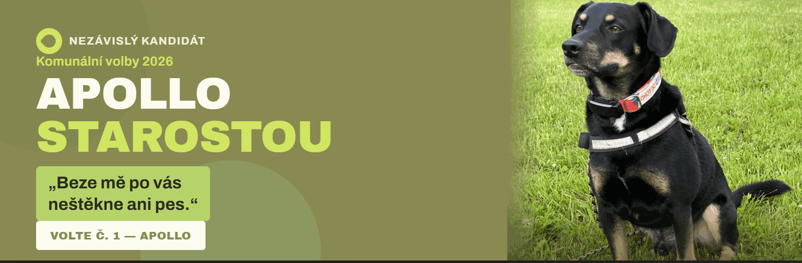

Oznamuji všem páníčkům i domácím a volně žijícím zvířatům, že hodlám kandidovat na starostu města v komunálních volbách ve dnech 9. - 10. října 2026.
Budu velmi potěšen, pokud mi dáte svůj hlas.
Váš
Apollo


Oznamuji všem páníčkům i domácím a volně žijícím zvířatům, že hodlám kandidovat na starostu města v komunálních volbách ve dnech 9. - 10. října 2026.
Budu velmi potěšen, pokud mi dáte svůj hlas.
Váš
Apollo
Nikdo jiný vám nedá to, co já vám slíbím, ale horší než současná starostka nebudu, ani když jsem pes.
Jsem občanem tohoto města již přes rok a chystám se to tady dát do pořádku.
Jsem typickým představitelem psa z malého města.
| den | hodina | misto |
|---|---|---|
| Pondělí | 6:00-6:15 | okolí zámku |
| Úterý | 6:00-6:15 | dvůr pošty |
| Středa | 6:00-6:15 | u rehabilitačního centra (ul. Hluboká) |